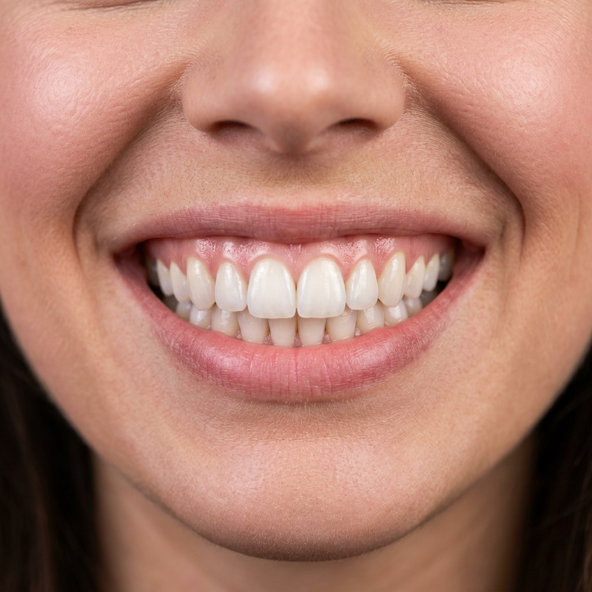
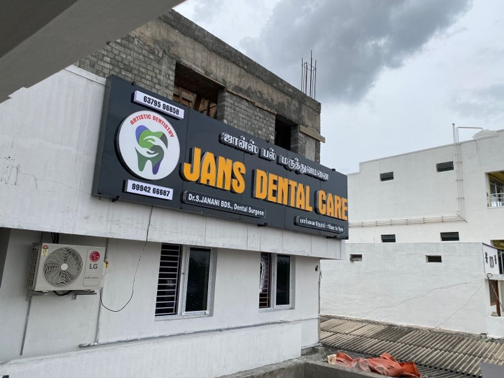
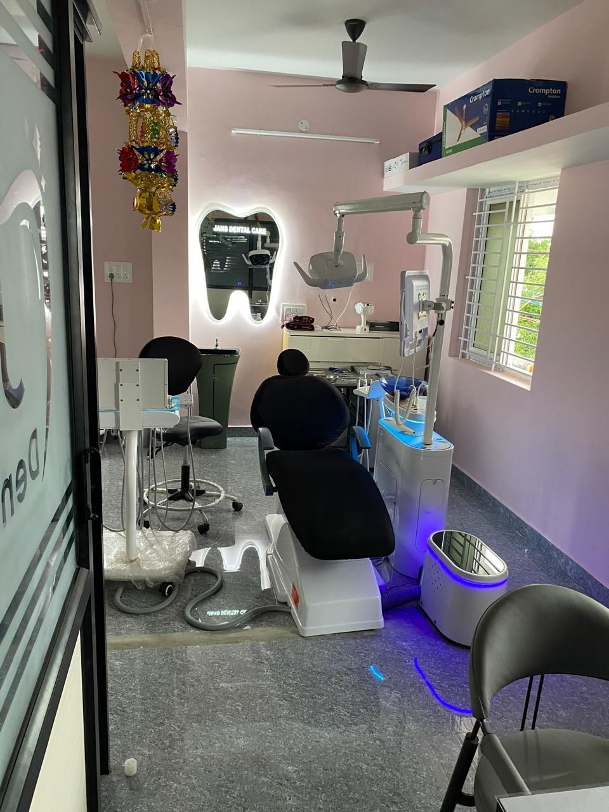

Smile Gallery
See the Transformations
For Yourself
Browse real patient cases showcasing the life-changing results of our dental treatments. Every smile here tells a story of trust, expertise, and renewed confidence.
Witness the Transformative Power of Modern Dentistry
Our gallery features genuine before-and-after results from patients who trusted us with their care. From subtle whitening enhancements to complex full-mouth rehabilitations, each case demonstrates our team's dedication to clinical precision and aesthetic excellence. These results are achieved through advanced technology, meticulous planning, and the skilled hands of our specialist team.

Smile Makeovers
Cosmetic Veneers
Dramatic smile transformations achieved through precision veneers, professional whitening, and aesthetic bonding. Each case is custom-designed to complement the patient's facial features.

Dental Implants
Full-Arch Restorations
Before and after results showing how modern implant technology restores missing teeth with permanent, natural-looking replacements that are indistinguishable from real teeth.
Orthodontic Corrections
Invisalign Results
Watch crooked, overcrowded, and misaligned teeth transform into perfectly straight smiles through our comprehensive orthodontic treatment programmes.

Full Mouth Rehab
Complete Restoration
Complex cases where multiple dental issues — severe wear, missing teeth, bite problems — were addressed in a coordinated treatment plan to rebuild the entire mouth.
Pediatric Dentistry
Children's Care
Happy young patients and their healthy smiles. Our child-friendly approach makes dental visits fun, setting the foundation for a lifetime of good oral health habits.
Our Clinic & Facility
Modern Environment
Tour our modern, fully equipped dental centre featuring digital X-ray suites, sterilisation stations, comfortable treatment rooms, and a welcoming reception area.
Virtual Tour
Take a Look
Inside Our Clinic
Our clinic has been designed from the ground up with patient comfort and clinical efficiency in mind. From the moment you step through our doors, you will notice the clean, modern aesthetic, the calming colour palette, and the warm, professional welcome from our front-desk team.
Behind the scenes, our treatment rooms are equipped with the latest digital radiography systems, intraoral cameras, electric handpieces, and advanced sterilisation autoclaves that exceed international safety standards.
Want Results
Like These?
Every great smile starts with a single consultation. Let our specialists design a personalised treatment plan just for you.